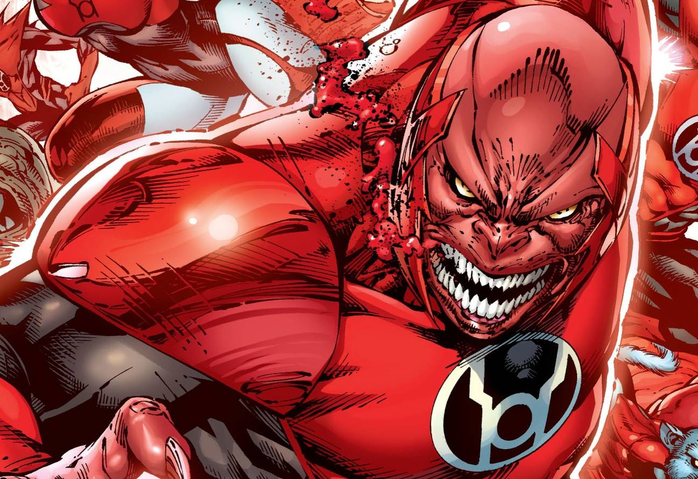

In-Universe History · 2007
Rage Ignites
Atrocitus forges the Red Lantern Corps from blood and vengeance.

2007
The story
On the dead world of Ryut, Atrocitus — last survivor of the Massacre of Sector 666 — finally acted on millennia of rage. Using the blood of his murdered comrades, the Five Inversions, he forged the first red power ring and the Red Central Power Battery over Ysmault's lake of blood.
The Red Lanterns debuted in Green Lantern vol. 4 #25 (December 2007, Johns/Van Sciver). Unlike other Corps, red rings choose those consumed by rage and strip away higher thought — unless the bearer bathes in Ysmault's Blood Ocean, which can restore sanity. Atrocitus built his army to destroy the Guardians, whom he blames for Sector 666.
Rage ignited the War of Light. The Red Lanterns would clash with every other Corps, and Atrocitus himself would become one of the Green Lanterns' most persistent foes — a villain whose fury is rooted in a genuine atrocity the Guardians committed.
Artwork: DC Comics — non-commercial fan tribute.